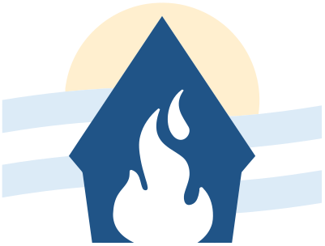
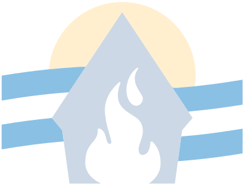
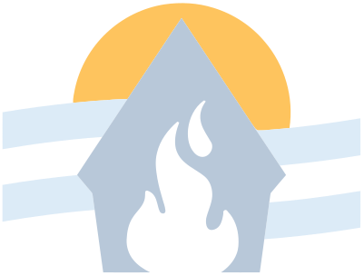

Juventud Masculina de Schoenstatt · Argentina
El itinerario del grupo de vida y una biblioteca abierta para todos.
Leé o consultá el itinerario formativo para acompañar a tu grupo, y encontrá todo el material de la JM ordenado en un solo índice, sin registrarte.
 JM ARGENTINA
“Con María,
JM ARGENTINA
“Con María,pasión que transforma” Conocé la historia del ideal y del símbolo
Biblioteca
Biblioteca abierta · 535 materiales sin repetir
Talleres
Todos los talleres por rama, con el núcleo del ideal que acentúa cada etapa.
- Pioneros María
- Secundarios Pasión
- Universitarios Transforma
Libros
Espiritualidad, teología, Iglesia, Schoenstatt y sexualidad.
- Espiritualidad
- Filosofía – Teología
- Iglesia · Catecismo y Encíclicas por Papa
- Schoenstatt · Padre Kentenich y pedagogía
- Sexualidad – Matrimonio
Recursos
Lo que se usa en el grupo, en el campamento y en la rama.
- Cancioneros
- Itinerario Dirigentes / SSP
- Manual del Jefe de Rama
- Retiros y ritos
Para dirigentes y portadores
Un camino para el grupo, tras las huellas del Padre Kentenich
No es un currículum: son cuatro etapas inspiradas en la historia fundacional de Schoenstatt. Respondé un diagnóstico corto y te decimos en qué etapa está tu grupo y qué material usar.
- Etapa 1Armar la comunidad
Conocerse y descubrir que el grupo es un lugar distinto.
- Etapa 2Alianza de amor
El vínculo con María, garantía del vínculo en el grupo.
- Etapa 3Solidaridad de destinos
La alianza fraterna: jugársela los unos por los otros.
- Etapa 4Misión
Lo vivido en el grupo se proyecta en salida.




Historia de la JM Argentina
Más de diez años buscando nuestro nombre y nuestra misión
Desde la Jornada Nacional de Jefes de Mendoza hasta el símbolo nacional: el camino que nos llevó a reconocernos en “Con María, pasión que transforma”.
Comunidad JM Nacional
Una sola gran JM, en todo el país
Cada rama encuentra acá el material común y puede sumar el propio.
Cuadernos NotebookLM
Profundizá cada tema
Cuadernos cargados con nuestro material, uno por tema. Hacé preguntas, pedí resúmenes o armá un encuentro a partir de las fuentes.